01 Wybrana klatka: ryś, Grand Prix Konkursu im. Włodzimierza Puchalskiego, 2002

 02
02- 03
- 04
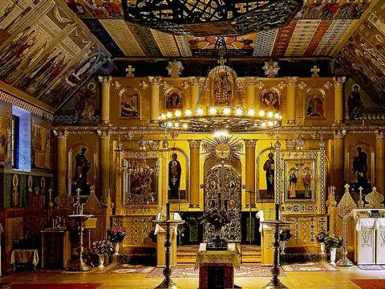
05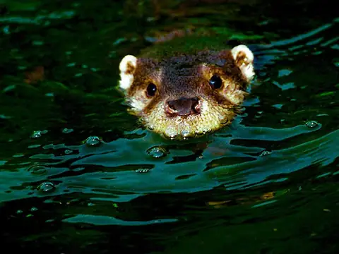
06
01 Ryś, Grand Prix Konkursu im. Włodzimierza Puchalskiego, 2002
Janusz Monkiewicz
Artysta fotografik z Pisza. Przyroda i architektura w Polsce i nie tylko, około 50 000 klatek w archiwum.
Otwórz archiwumMoim największym marzeniem jest przybliżenie nieznanych, pięknych miejsc i zabytków architektury polskiej.
Mieszkam w Piszu, małym miasteczku na Mazurach. Fotografuję przyrodę i architekturę: żurawie na mazurskich polach, mgły nad Pisą, drewniane cerkwie Podlasia, klasztory i muzea w całej Polsce, a także Wileńszczyznę.
Jestem członkiem rzeczywistym Stowarzyszenia Twórców Fotoklubu Rzeczypospolitej Polskiej z tytułem Artysta Fotograf (Fotografik) RP. W latach 2002-2006 i 2010-2013 byłem prezesem Związku Polskich Fotografów Przyrody, Okręgu Warmińsko-Mazurskiego.
Zdjęcia porządkuję w archiwum według regionów i tematów. Jest w nim około 50 000 klatek, z których wybieram te do wystaw, albumów i publikacji.

Archiwum
Arkusze stykowe z kilku rozdziałów archiwum. Żółte narożniki oznaczają klatki wybrane z arkusza. Kliknięcie otwiera cały kadr.
Arkusz 1. Zwierzęta i krajobrazy, najczęściej z Warmii i Mazur.
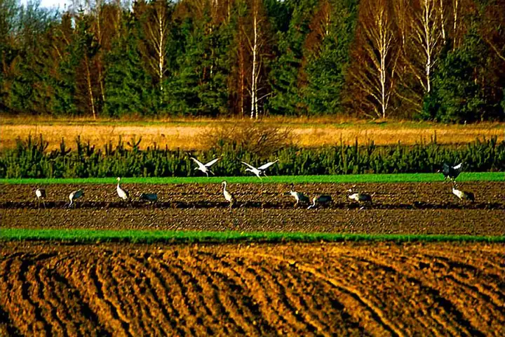

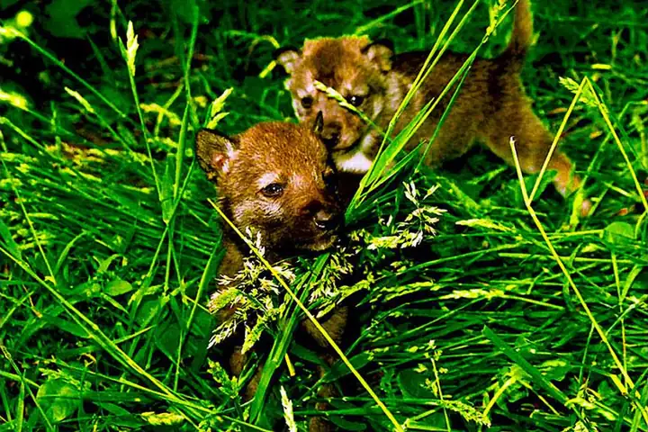
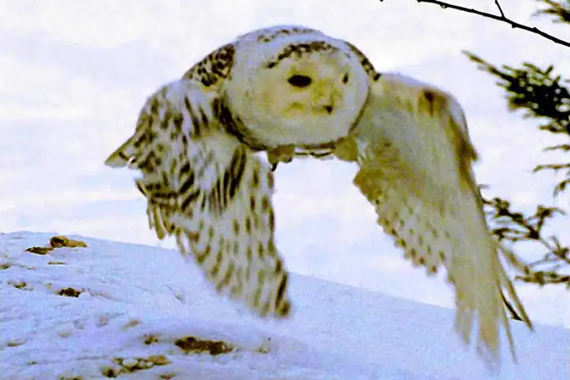

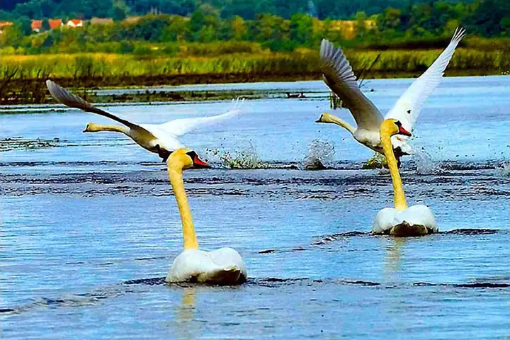
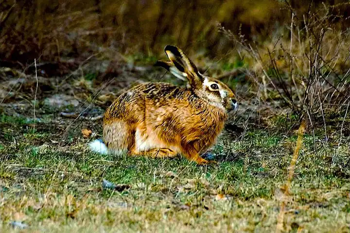

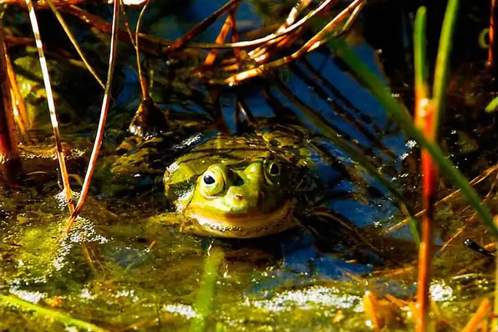
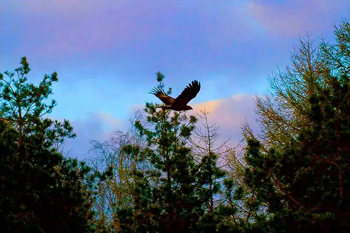


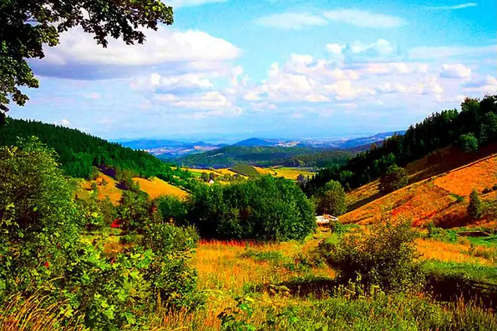


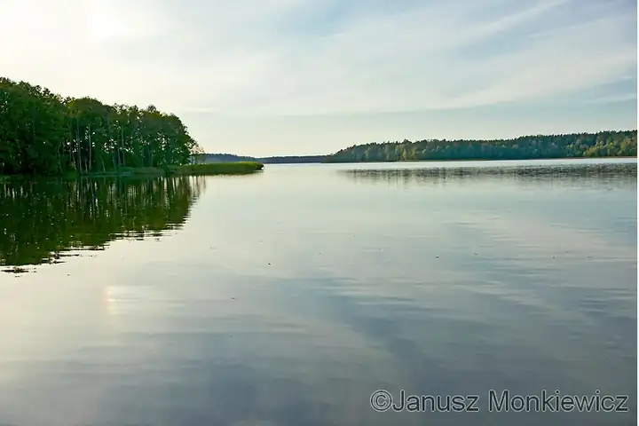
Arkusz 2. Kościoły, klasztory, dwory i małe miasteczka.

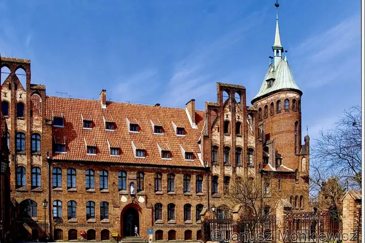
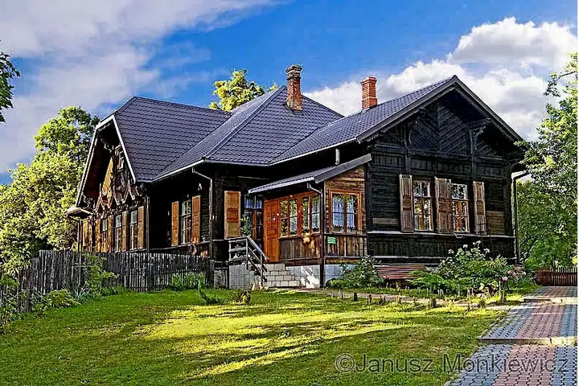

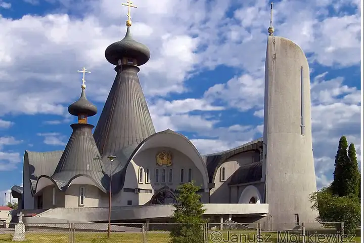
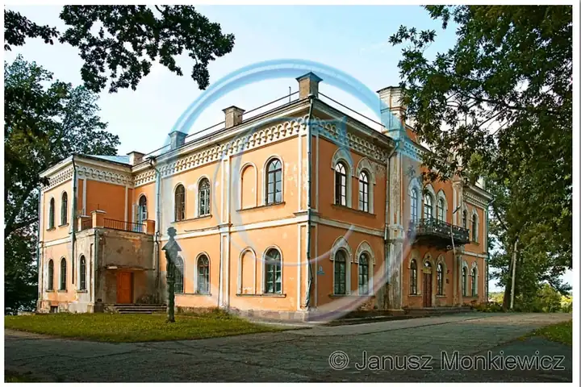
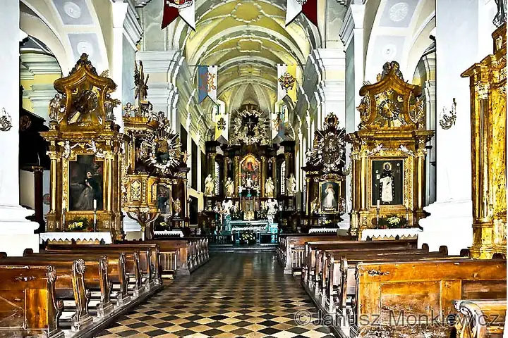

Arkusz 3. Cerkwie Podlasia i Lubelszczyzny, także ich wnętrza.

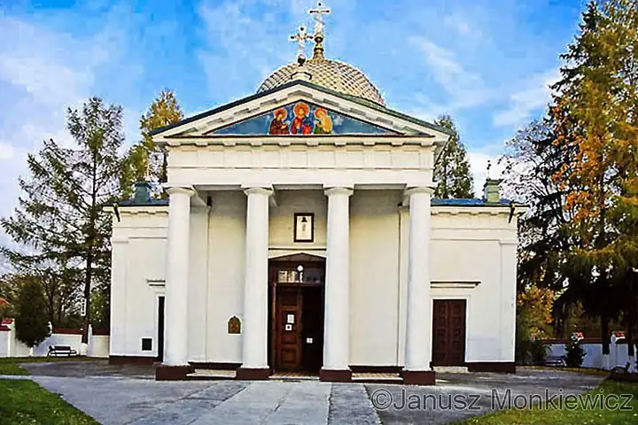

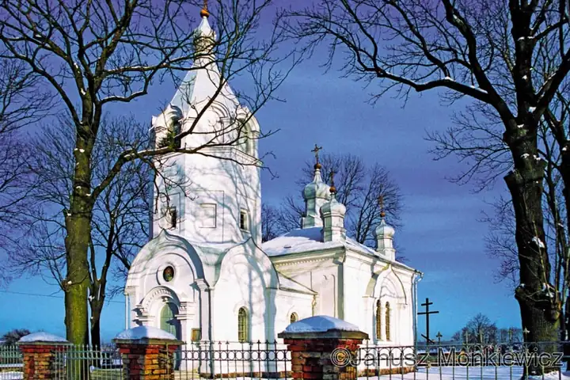

Arkusz 4. Klasztory: Chełmno, Braniewo, Gidle, Jasna Góra.

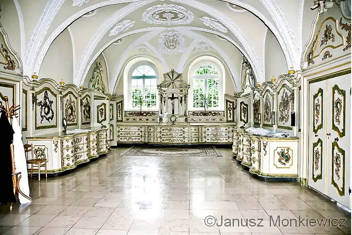
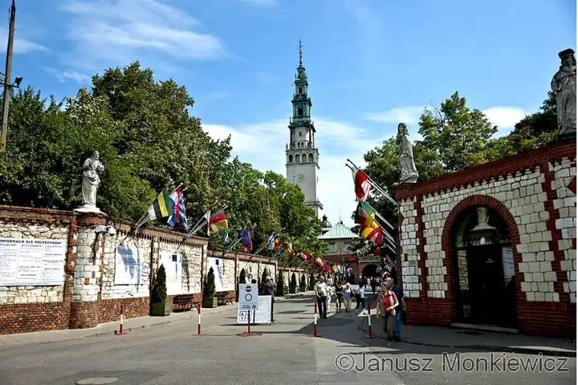
Na gotowej stronie każde województwo będzie osobną galerią z własnym adresem, np. janusz-monkiewicz.pl/podlaskie, który można wysłać w wiadomości.
Ginące zawody
Cykl z 2010 roku. Ludzie, którzy jeszcze pracują tak jak ich dziadkowie: w kuźni, przy kole garncarskim, przy krosnie i nad kawałkiem drewna.
- Kowal Mieczysław Hulewicz, Czarna Wieś Kościelna
- Garncarz Mirosław Piechowski, Czarna Wieś Kościelna
- Rzeźbiarz Piotr Szałkowski, Sokółka
- Tkaczka Teresa Pryzmont
- Łyżkarz Mieczysław Baranowski, Zamczysko


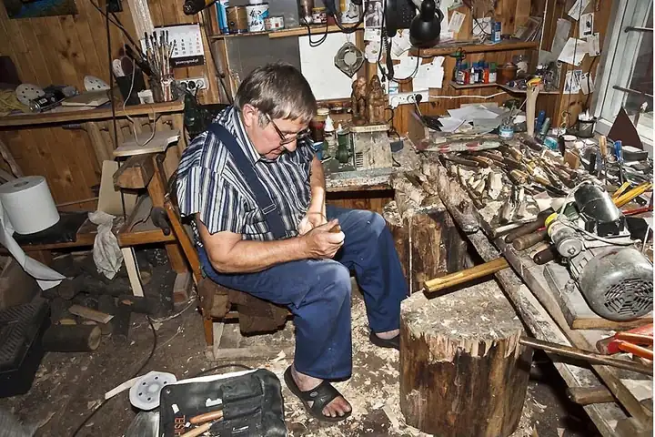


Wystawy i albumy
- 2002Grand Prix i I miejsce w kategorii "Ruch" w Konkursie im. Włodzimierza Puchalskiego. Prezes ZPFP Okręgu Warmińsko-Mazurskiego do 2006 roku.
- 2003"Wizje Natury" na Festiwalu Foto Natura, "Cyberfoto 2003" w Częstochowie, "Krajobraz Górski 2003" w Nowym Targu.
- 2004"National Parks in Poland" w Hamburgu, Berlinie i Strasburgu. "80 lat Lasów Polskich" w Warszawie.
- 2005EXPO 2005, Pawilon Polski w Aichi w Japonii. "Ginące gatunki zwierząt w Polsce", National Geographic Polska.
- 2006Wystawy "Warmia" w Lidzbarku Warmińskim, Braniewie i w Konsulacie RP w Kaliningradzie. "Budownictwo drewniane Podlasia oraz Warmii i Mazur" w Elblągu.
- 2008Wystawy w Meppen w Niemczech, w Galerii Stary Spichlerz w Olsztynie i w Galerii "Holl" w Ełku.
- 2010Ponownie prezes ZPFP Okręgu Warmińsko-Mazurskiego, do 2013 roku.
- 2014"Przyroda w obiektywie" w Muzeum Przyrody w Olsztynie i w Szczytnie, "W naturze" w Galerii Stary Ratusz w Olsztynie.
Albumy i książki autorskie
- "Warmińsko-Mazurskie"album, wydawnictwo Bosz
- "Dolnośląskie"album, wydawnictwo Bosz, czterech autorów
- "Przewodnik Warmińsko-Mazurskie"książka, 408 stron, wydawnictwo Bosz
Moje zdjęcia są też m.in. w albumie "Wolin", w książkach "Polska niezwykła", "Miasta Polskie", "1000 muzeów w Polsce" i w wydawnictwach Reader's Digest.
Zapytanie o zdjęcie z archiwum
Jeśli szukają Państwo konkretnego miejsca, zabytku albo gatunku, proszę napisać albo zadzwonić. W powiększeniu każdego zdjęcia jest przycisk, który wpisuje je od razu do formularza.
- E-mailmonkiewicz@janusz-monkiewicz.pl
- Telefon501 668 087
- MiejscePisz, Mazury